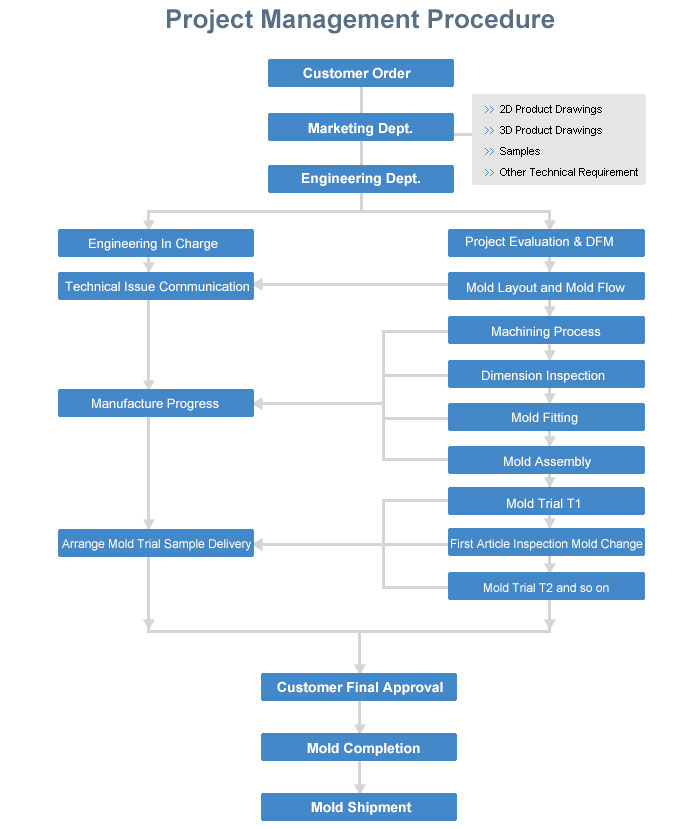
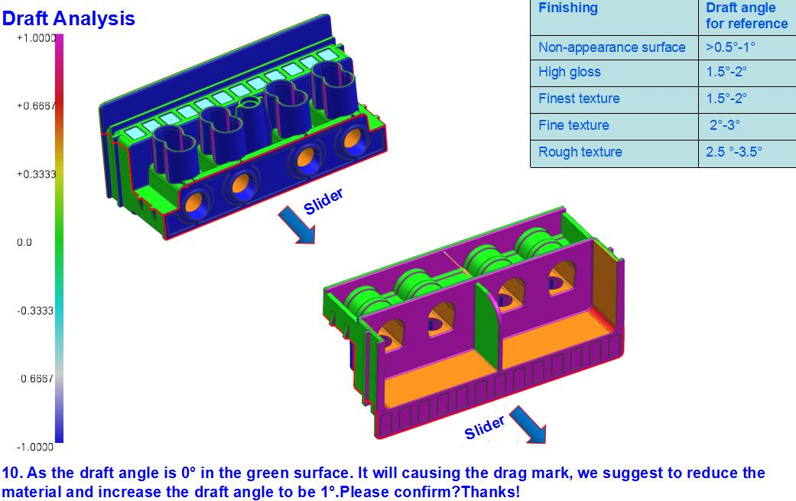
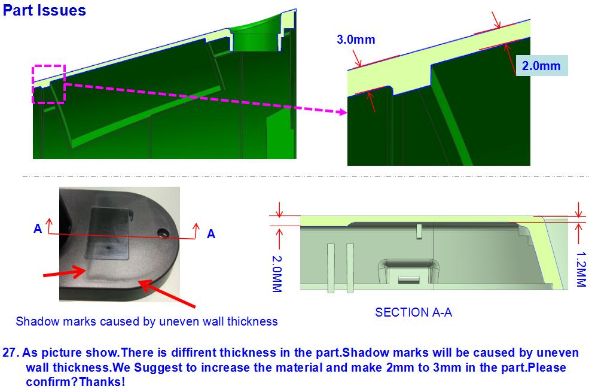
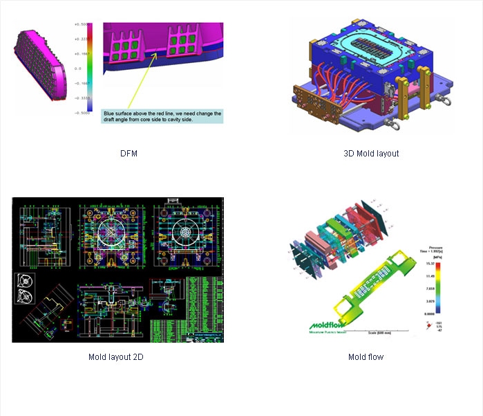
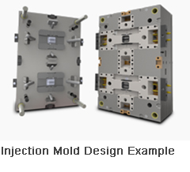
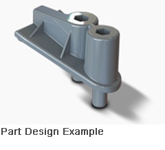

Project management
Professional project management is one of our key advantages to our customers. Our project management process can benefit our customer in saving time and reducing the operation cost. Our Project Engineers have good experience with mold and can speak English well. They are the bridge and the window for customers and projects in {{ site.name_abbr }}.
Design for Manufacturability (DFM)
Early Part Review Provides Critical Information
Early involvement in part and mold design using Design For Manufacturability (DFM) Review is key to successful part and product development.
At {{ site.name_abbr }}, we emphasize the benefits of DFM to our clients with the knowledge that this powerful diagnostic tool will create a more efficient production cycle and ultimately increase profitability.


Simpoeworks,a plastic injection simulation application is embedded into the Solidworks user environment,providing a truly seamless integration of part design, mold flow analysis,and mold design.By using Simpoeworks,we can simulate the injection molding proess,optimize molding parameters,and idntify potential tooling and molding probems in the early design stges.
Moldwords,a 3D,solid-based mold design application is seamlessly integrated into SolidWorks,lt incorporates preset mold design time,By using Parametric 3D CAD mold design,we are able to employ CAM(Computer Aided Manufacturing)in a near paperless environment,Our PDM(Product Data Management)system ensures that incoming and outgoing files are tracked and managed.We utilize our ECN(Engineering Change Notice)system to control and verify design revisions.
{{ site.name_abbr }}¡¯s extemsove tooling and manufacturing experience is an invaluable resource in resolving production gaps that can occur with crestive product concepts within the limitations of a manufacturing environment.{{ site.name_abbr }} can take your initial product idea and turn it into a manufacturable part design While keeping the quality,aesthetics,and funtionality of your original product concept.